0:00 0:05 Hello, everyone, and welcome to lecture 2 of CME 296. So today is a very exciting day because we'll be talking about a new generation paradigm, which
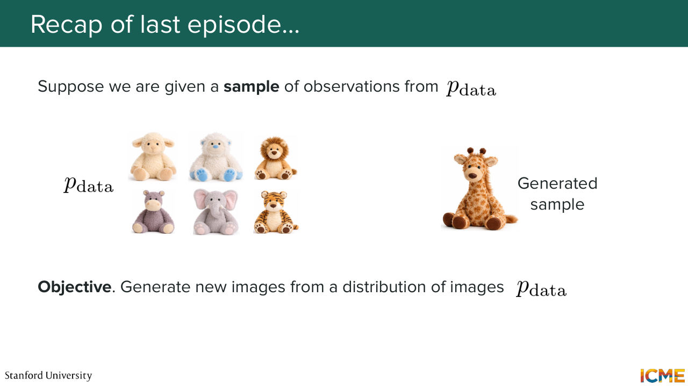
0:18 is going to be score matching. So if you remember last week, we saw a first generation paradigm which was diffusion with DDPM. So today we're going to see a new way of doing this and see how this relates to the way we were doing this with diffusion with DDPM. So before we start, I'm just going to recap what we saw last week.
0:47 So if you remember, the first three lectures are all about understanding how we can generate new samples by trying to generate from a distribution pdata that we do not know that is potentially complicated. So here we have nothing as input. So it's unconditioned generation. And our goal is to learn a way to generate new images.
1:19 So what did we see last time? So our strategy was to take images
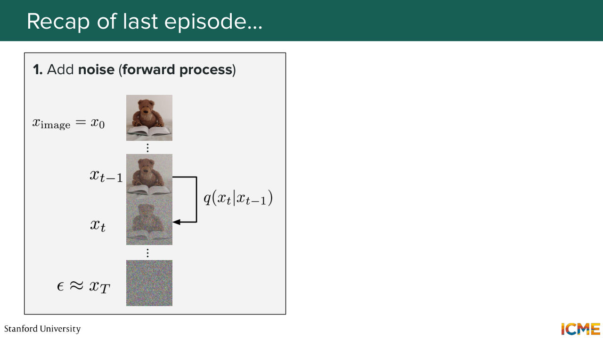
1:27 from the training set that we called clean because they did not have any kind of noise.
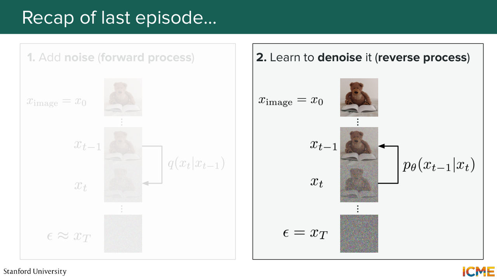
1:33 And what we did is we defined a process q that added some noise progressively, such that at the end of the day, we ended up with just pure noise or almost pure noise. And the goal of DDPM was to learn a reverse process that was able to predict the noise to remove from the noisy image.
2:01 So that was the strategy. You take an image. You gradually add some noise. And what you do is you try to learn how given a noisy image
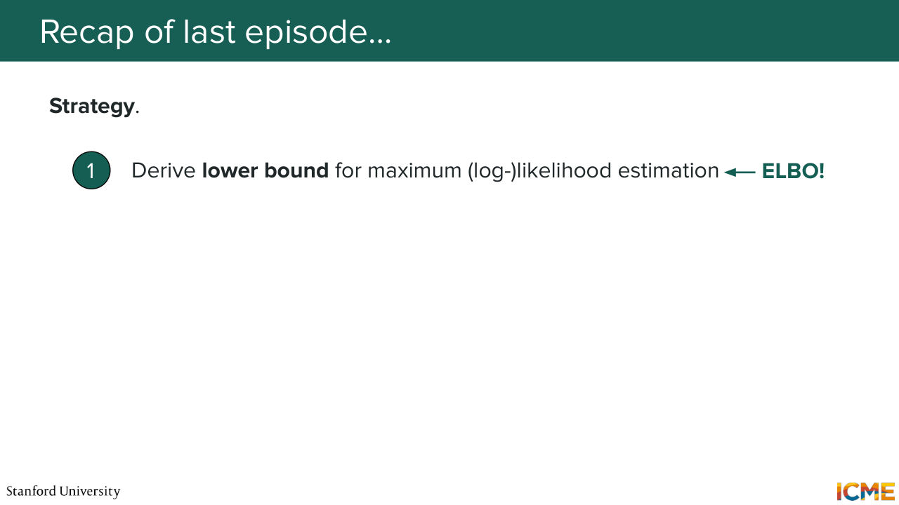
2:12 and given the noise level, how you can remove the noise from that image. So the way we went about doing this was through likelihood estimation.
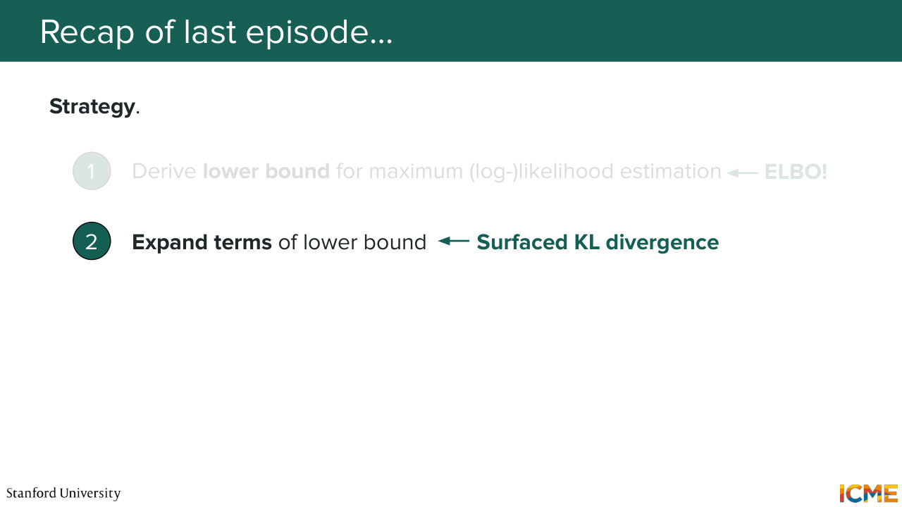
2:26 So we had our model p theta that we're trying to learn. And what we were doing is trying to maximize
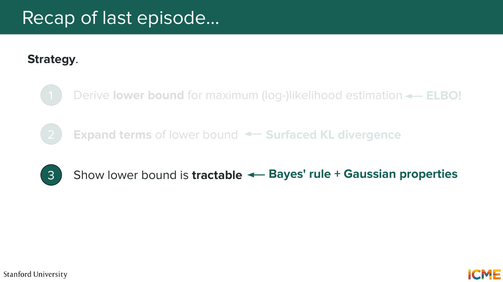
2:34 the probability of our model seeing the data from a training set. But we saw that it was intractable. So what we did is we derived a tractable lower bound that we could also maximize that could be a good proxy for our objective. And we ended up with this ELBO formulation.
2:58 And what we did is we expanded the terms from the lower bound. And what we saw was that there was some nice terms that came out of it. So there was, for instance, a KL divergence between exactly what we wanted to learn and the forward process that we defined that was something that we could express. And then the third step was to indeed show
3:28 that this was tractable. And we leveraged the fact that we were actually defining our forward process with Gaussian noise and with Gaussian distributions.
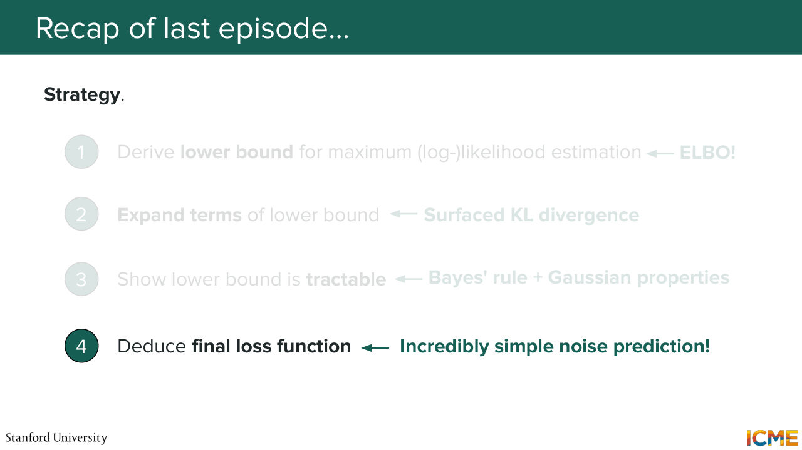
3:40 And the good thing with Gaussian distributions is there's a lot of nice properties, which is things that we leverage here. And at the end of the day, we deduced a loss function that was actually very simple. It was a simple L2 regression loss on the noise
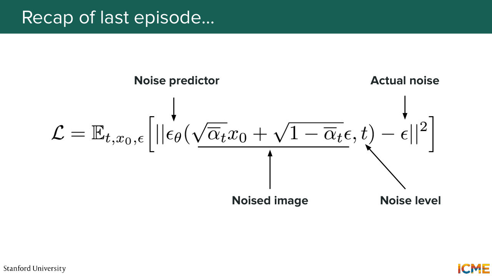
3:59 that we wanted to remove. All good so far? So this was last time. And so this was the loss that we had. So we had the the noised image as an input along with the noise level. And we had our model that we wanted to train which is here, the noise predictor-- epsilon theta. And what we wanted to do is to have
4:27 that match as close as possible the actual noise that we use.
4:33 And as I mentioned, this way of doing things was just one way.
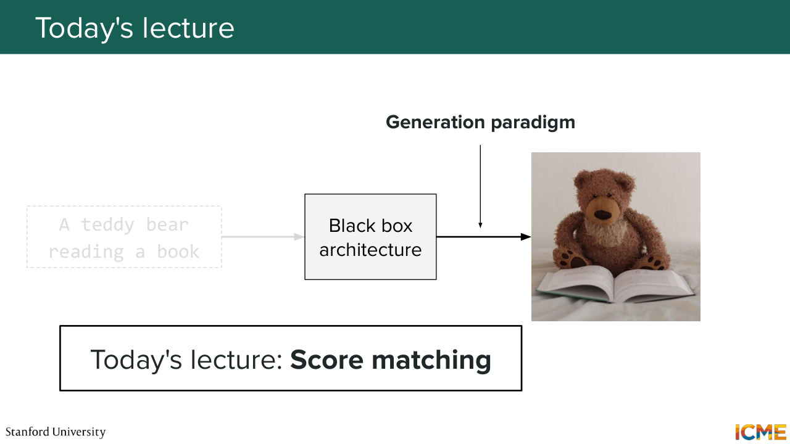
4:38 And what we're going to see today is another way of doing this, which is called score matching. So I'm going to start with just taking another perspective of the problem that we have at stake. So remember that we have some training sets that contains some images. So these are for instance, the Teddy bear images that we have. And our goal is to sample a new image from that distribution.
5:12 So this set of images, they come from a complex data distribution, let's say, pdata that we do not. And our goal is to sample from it. Now, a very common strategy that we will again reuse here is to sample from an easy distribution
5:40 and then to recover the image that we want to sample towards the end. So here this cross this represents maybe an observation that we can sample that is not part of pdata but part of a distribution that is easy to sample from. So let's say Gaussian noise. So given that what we're wondering is,
6:06 is there a way to go from something that is easy to sample towards something that
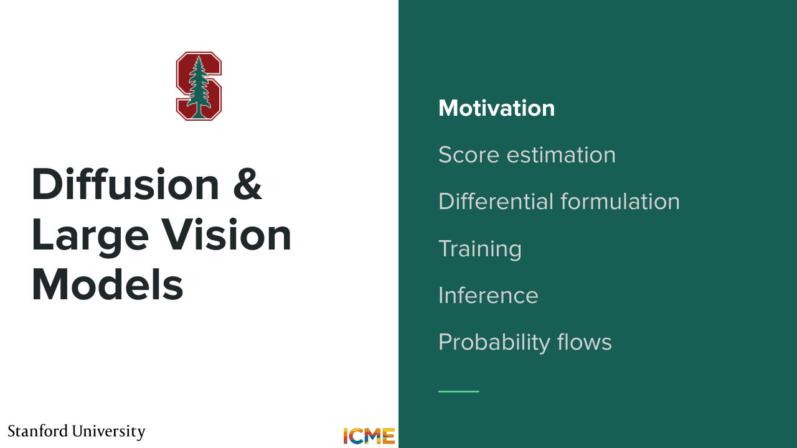
6:14 is hard to sample? Does that make sense? It's going to be a bit more clear. So let's imagine you have p of x, which is the probability density function that takes in x, the representation of images as input, and that tells you the probability density of it happening at x.
6:44 So this is what the figure is showing. So here darker colors mean higher values of p of x. So if you were over here, what would
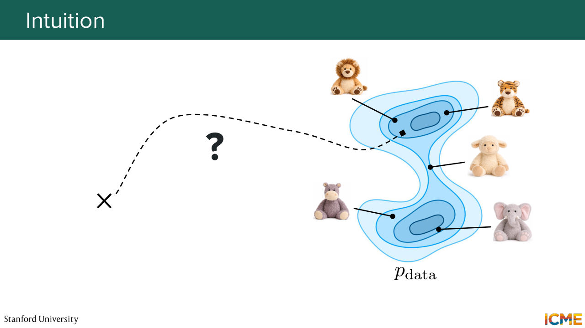
7:01 be a way for you to come closer to regions
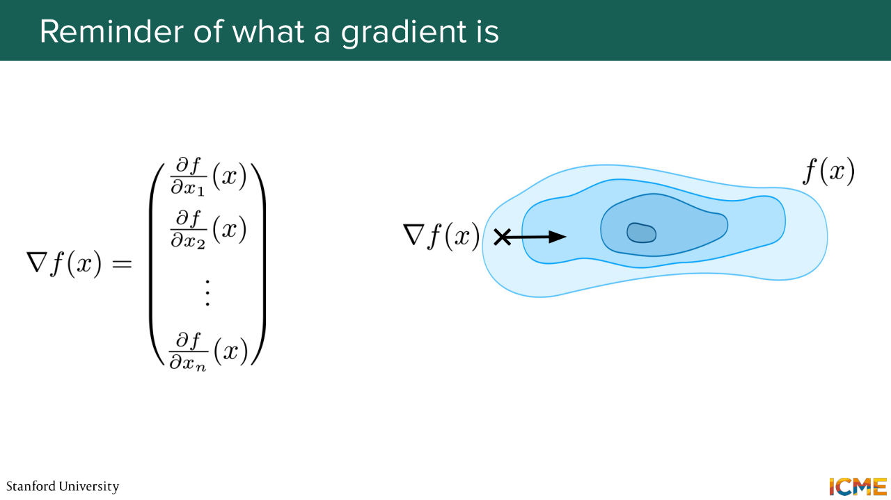
7:07 higher values of p of x? So the answer is, let's take the gradient. So just as a reminder, the gradient of a scalar function here that takes in as inputs x, which is multidimensional, and returns a scalar,
7:31 so the gradient of the function is the vector of components, partial derivative of that function with respect to each dimension of the multidimensional space. And what the gradient here represents is the direction where this p of x is higher value. So here the idea is if we can have access to gradient of p of x, then from this starting
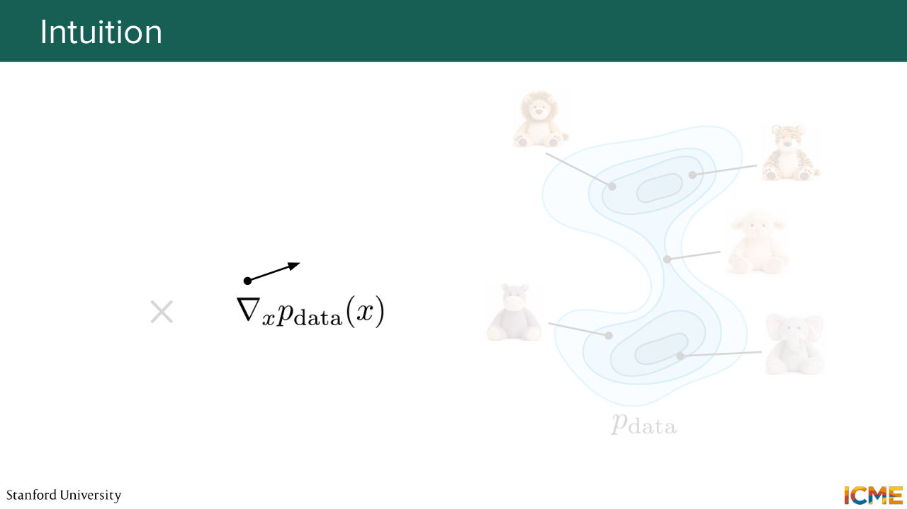
Shown briefly — discussed together with the adjacent slides.
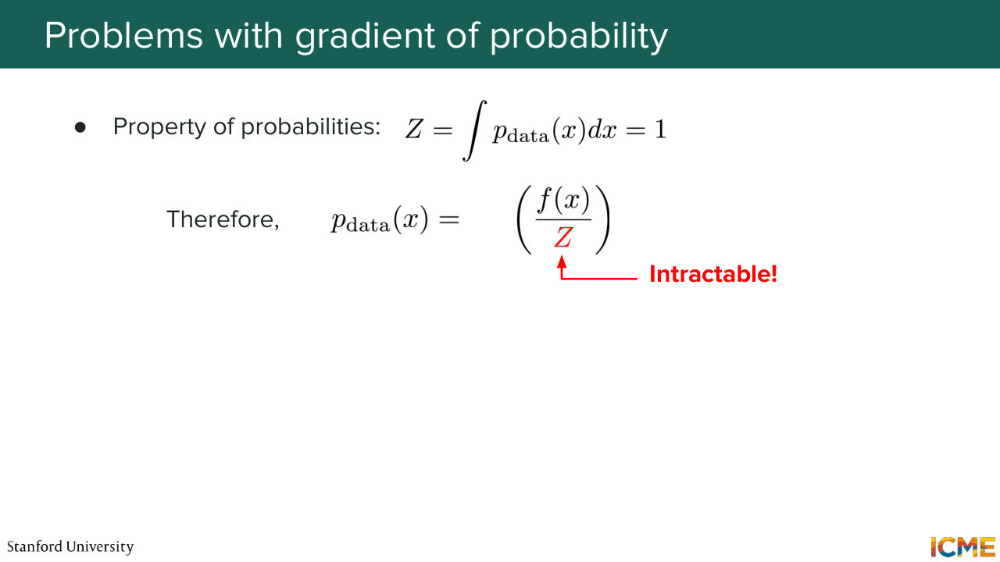
8:06 point, we can maybe go towards regions higher density. 8:17 But there is a problem. The problem is that estimating the gradient of the probability density function is actually a very hard thing to do. And there are a few reasons for that. So the first one is that probability density functions, by definition, they are normalized,
8:42 meaning that if you take the integral towards the whole space, the integral of p of x needs to be equal to 1. So you have this constant, that maybe we can note here z, that is something that is very hard, intractable for you to compute, because you would need to sum across all possible values of your space. And space is multi-dimensional, and it's
9:07 a lot of computation, not something that you can actually do. So this quantity is intractable. So if p of x is intractable, then if you take the gradient,
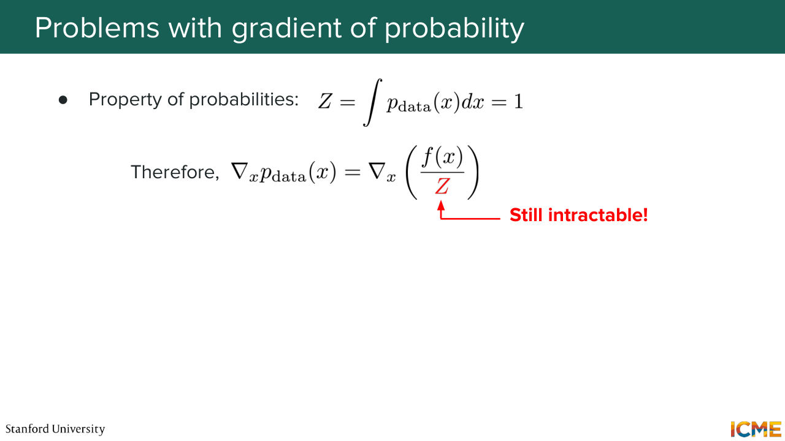
9:19 it's also intractable. So that's the first reason. The second reason is different compared to the first one, which
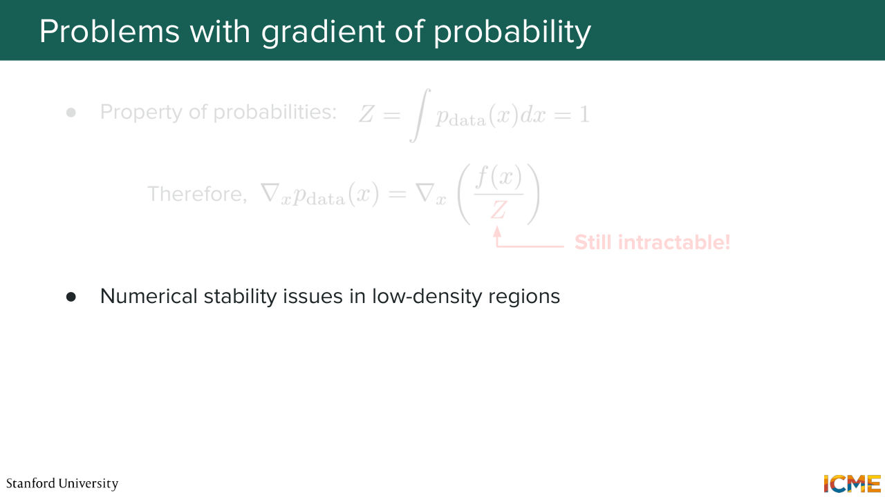
9:30 is due to the fact that the probability density function can take very low values in certain regions of space where there are very few data. So let's suppose here-- let's say you have a point here, then the probability would be very small. And so this can cause some numerical stability issues.
9:56 So because of these reasons, maybe we can take a look at another candidate of a way for you to go from a certain point towards regions of high density of the space. And that potential candidate can be the gradient of the log of the probability, as opposed to just the gradient of the probability. So why could that be-- why would that be a good candidate?
10:31 Well, do you remember the first point I mentioned regarding the normalizing constant?
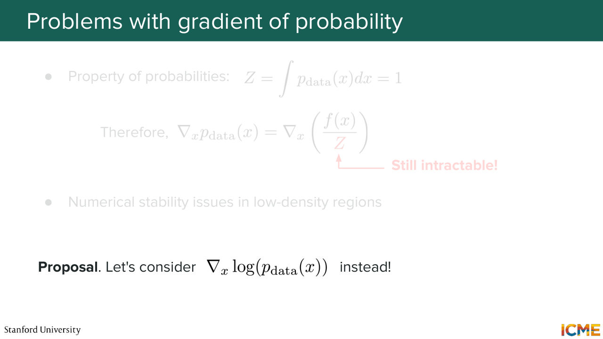
10:39 Well, thanks to the properties of the logarithm function, if you take the logarithm of the numerator over the denominator,
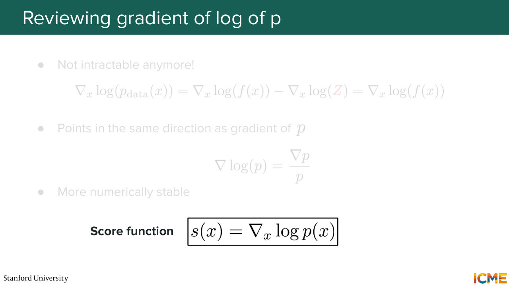
10:48 it's just the logarithm of the numerator minus the logarithm of the denominator. And given that the normalizing constant is constant with respect to x, the point in space, the gradient of log of z is actually 0. So what that means is in order to compute the gradient of log of p, you don't have to figure out how you want to compute that intractable quantity.
11:23 So that's reason number 1. Reason number 2, I'm not sure if this was obvious to you, but just to emphasize on this a bit more, the gradient of the log is actually pointing in the same direction as the gradient of p. And the reason for that is just a calculus reason. So the gradient of log of p is equal to the gradient of p over p.
11:50 And so what that means is up to some normalization, the gradient of the log of p is pointing towards the same direction of gradient of p. Because p is a scalar. Just remember p is a scalar. So it's as if you were dividing your vector by the same quantity across all dimensions. First reason, it is tractable.
12:21 Second reason, it is pointing in the same direction as gradient of p. And then the third reason is that it is just more numerically stable. And the reason for that is when gradient of p is very, very small, then there are chances that p is also very small.
12:44 And so if you take the ratio, it is not as small. So that's the third reason. So for all of these reasons, a possible strategy for you to go from one point in space towards region higher densities with respect to the probability density function
13:10 can be to follow the direction given by gradient of log of p, which we call the score. So this is the reason why this lecture is called score matching. It is because we're interested in this quantity, which is the score, which is the gradient of the log of p. One note that I will add is just see that I said gradient
13:37 of log of p with respect to x. So you may think it is redundant, but it is actually because we want to distinguish it from another score, which is with respect to the parameters of a model that sometimes people use. And so I just want to clarify here that we take the gradient with respect to x, which is the position in the space.
14:03 Sounds good? OK. Cool. So this is how our score would look like in space. So here if you're further away, typically the score, the magnitude would be bigger because you have the gradient of p over p. And p is small, and it's smaller when you get closer to the distribution. So now a question that I have for you is,
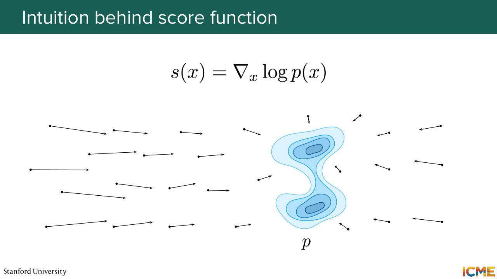
14:32 let's suppose we sample from this space, sample from a distribution that is easy to sample, which is somewhere
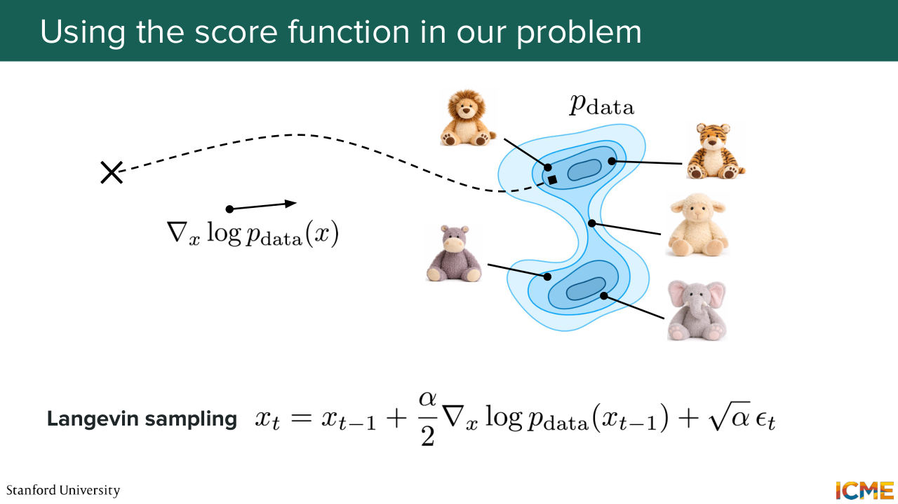
14:40 in space. And if I were to tell you, if I were to ask you, how would you go from this point to higher density regions of the space using the score? How would you do it? [AUDIO OUT] Follow the score. Yeah. So you could follow the score. So the reason why I'm asking you this question
15:05 is because there is a catch. Because if you follow the score, it means that you're going towards higher density regions of the space. But the problem is you may always go where the density is highest. And so here when you look at this illustration, there are places where density is not the highest,
15:30 but it is still a valid sample from the distribution. So actually what we want is not only go towards higher density places of the region, but also to have some diversity, to not always go at the same place. So that's the reason why. Let's assume we know the score. We would use a sampling method that is very commonly used, and I'm going to call out now, which is called the Langevin
16:06 sampling. And what that does is it not only allows you to go towards higher density regions of the space, but also have a stochastic term that allows you to go to explore a little bit the region. So I displayed the formula here on the slide a little bit out of nowhere.
16:30 So we won't have time to derive it. But I just want to show you that there is a way for you to start from a starting point, and then use the score to end up with a sample from the probability distribution. And that method is called Langevin sampling. So if you know about MCMC methods, so Markov Chain Monte Carlo, so Langevin sampling
17:00 is just one such methods. That sounds good? Yeah. [AUDIO OUT] Yep. [AUDIO OUT] 17:26 Yeah, so the question is, are these coefficients coming out of nowhere? Are they're here for a reason?
17:32 The answer is yes. They're here for a reason. And they can be derived using some equations. So if you've heard Fokker-Planck equation is something that you can use to derive this. We won't have time to derive it, but there is a reason. There is a reason for this. Yeah. [AUDIO OUT] Yes.
17:59 So the question is, is there a convergence concern because the score is getting lower and you always go from one to the other? Is that the question? So we will see that later on and see how that is actually not a concern. But yeah, great question. Yeah. [AUDIO OUT] 18:28 So the question is, how do you choose alpha? And we're going to also see that later.
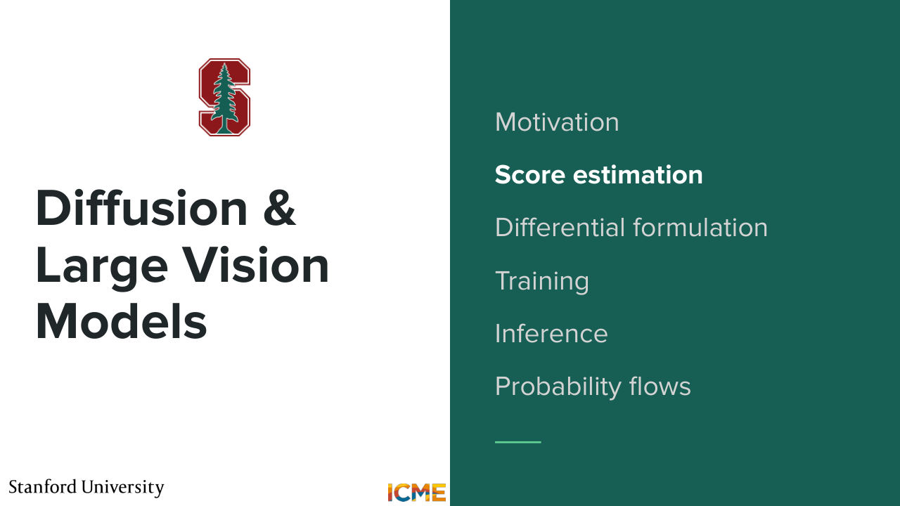
18:34 But it is something that you choose.
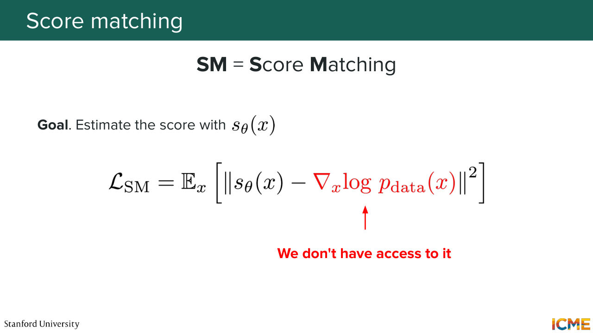
18:40 Cool. Great questions. And with that, I for now assume that we
18:47 knew how to get the score. But the reality is we don't. So we're going to spend this first part just trying to see how we can estimate the score. And it is actually not an easy problem, and we're going to see why. So first of all, the task of estimating the score is widely known as score matching,
19:14 because you're trying to match the score. So here the way you want to do it is similar with the noise L2 regression. You also want to have some L2 regression, but this time on the score. But the main problem is you don't know what pdata is, and you also do not know the score of the data distribution.
19:40 So looking at this loss function, there's actually no way for you to estimate s theta of x.
19:50 So that's the reason why there's been a few papers across the years, along the years, that have tried to estimate this score function without having the need to know the true score function. So I'm just going to enumerate a few methods that were out there. For instance, this one is back in 2005, there was a method called Implicit Score Matching that
20:19 derived a loss that actually did not require you to have the knowledge of the true score function. And there is another method called Sliced Score Matching, which used the fact of projecting the score on different random vectors, random projections. So I put the papers at the bottom of the slide.
20:45 We're not going to go into details just because these methods are not really commonly used like nowadays. But instead what we're going to do
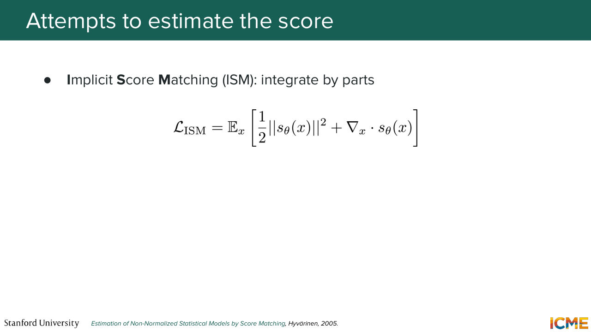
Shown briefly — discussed together with the adjacent slides.
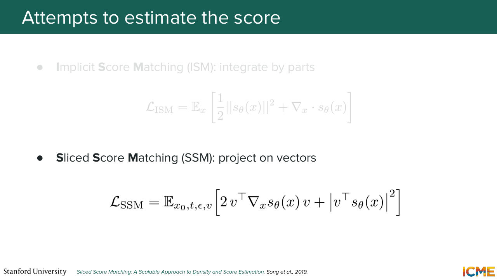
Shown briefly — discussed together with the adjacent slides.
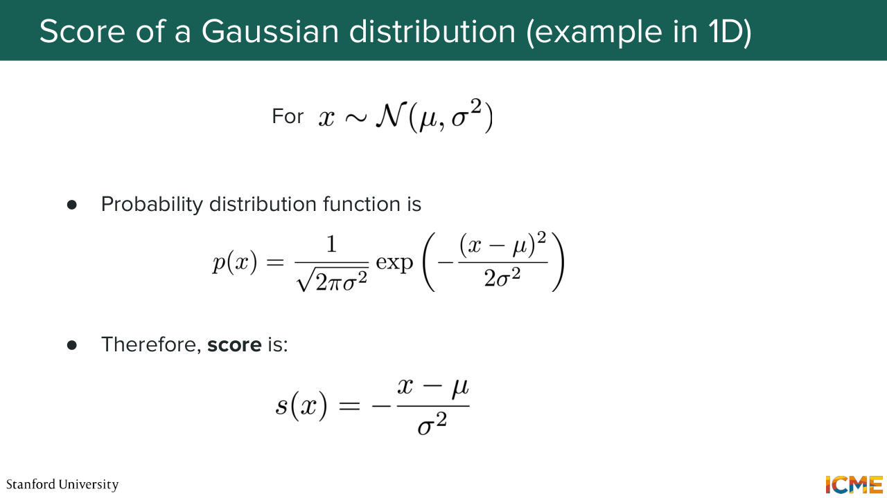
20:57 is to focus on the common method that is being used, which is called denoising score matching. And it relies on the following observation. So I told you that we do not have the knowledge of the score of the true distribution, because the true distribution is a complex distribution. But I also told you that Gaussian distributions
21:26 have very nice properties. So one idea that we can have is let's try to see if we can compute the score of a Gaussian distribution. So let's assume that we have a random variable x that is drawn from a normal distribution of mean mu and variance sigma squared. So here I'm taking an example in 1D just so that we're--
21:50 so that it's easier. So the probability distribution function or probability density function is given by this formula, which is analytically explicit. It is something that is given here. Well, it turns out that if you take the gradient of the log of p, then you end up with this very nice formulation of minus x
22:24 minus mu over sigma squared. Should we derive it, or is it, quote unquote, "obvious"? You want to derive it? No? OK. Maybe one thing I will do is to just tell you why this formula makes sense. So if you consider a Gaussian distribution,
22:57 the probability density function would be something like this. You'll have high densities towards the mean. And then you will have lower values of the densities as you go away. So here what you're saying is if you take some x in space, what it is saying is the score at that point x is given by minus x
23:26 minus mu over sigma squared. So what that means is, so minus x minus mu is mu minus x. Oops. So it's supposed to be a straight line. So let's suppose it's a straight line. It's going to be somewhere like this. Sigma squared is positive. So it's going to be pointing towards the mean. And just remember that the score is
23:56 a quantity that gives us the direction of higher densities in the space. So just to tell you that this formula makes sense. So back to our original goal. So what we want is to find a way to compute
24:22 the score of a distribution. And we saw that computing the score of a Gaussian distribution is easy. So how about we take one point from our training set and we noise it. So let's suppose we're given x from our training set. And let's suppose we add some Gaussian noise, and we scale it with sigma.
24:55 Then we have x tilde, which is equal to x plus sigma epsilon. So x tilde follows a normal distribution of mean x and variance sigma squared I. And using exactly these results, you get that the score of-- so we're calling that q sigma of x tilde given x. So this quantity is actually something that is tractable.
25:30 25:35 So now the question is, how can we use that result in order to go back to our initial objective, which is to determine the score of the data distribution of interest? So just remember at the first starting point we want to estimate the score of pdata, which is like this.
26:04 Well, the key idea here is to take that data distribution and to noise it. So for that, we're going to introduce q sigma of x tilde, which is this quantity. And I'm going to explain what that quantity is. So what I'm going to do is to just rewrite the expression
26:35 on the blackboard. And maybe it's here. [AUDIO OUT] OK. Thank you. So you have q sigma of x tilde. Whoops. So it is a function of this perturbation. So it's called the perturbation kernel. So you take one data point from your data distribution.
27:09 And then you noise it. So this is the one. And what you're actually doing is you're repeating that procedure for all elements of your training set. Which is why you're ending up with this distribution. So this is an expression that takes in each point of your training set.
27:39 And that noises it. And you just repeat that process for all points of your training set. And this you can interpret it as a joint probability distribution that you can also note q sigma of x tilde and x, which is a valid one. Because if you integrate over x tilde and x, you get one.
28:10 So I just want you to look at this formula and just not be scared about what that means. I think it's quite easy. Another way of seeing this is in practice, what you have is only a few data points from your distribution. So it's as if you were saying you take the finite set of data points that you have from your distribution, and what you do
28:38 is you noise each of it. So it's as if you were obtaining a mixture of Gaussians. It's as if you were obtaining-- you have your different points. And what you do is you noise, you noise each point. And so we're going to call q sigma of x tilde the noisy distribution.
29:08 Yeah? Cool. So as you can tell, q sigma is a function of sigma. And sigma tells you how much noise you're adding to the distribution. So if you have, let's say, a small sigma, your distribution is just a little bit noisy. So it just spreads a little bit. But then as you add more and more noise, it just spreads out and takes much more space.
29:43 So how can you use these definitions in order for us to compute the true score? So we're going to see it now. So let's consider the score matching objective
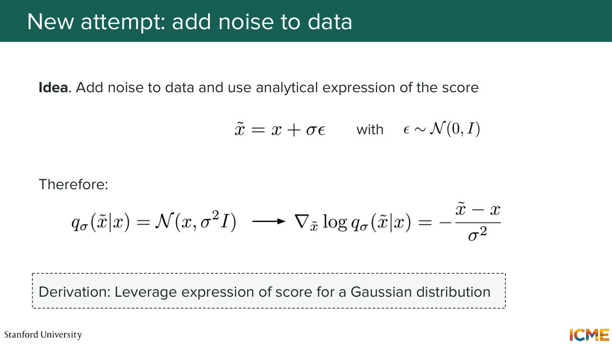
Shown briefly — discussed together with the adjacent slides.
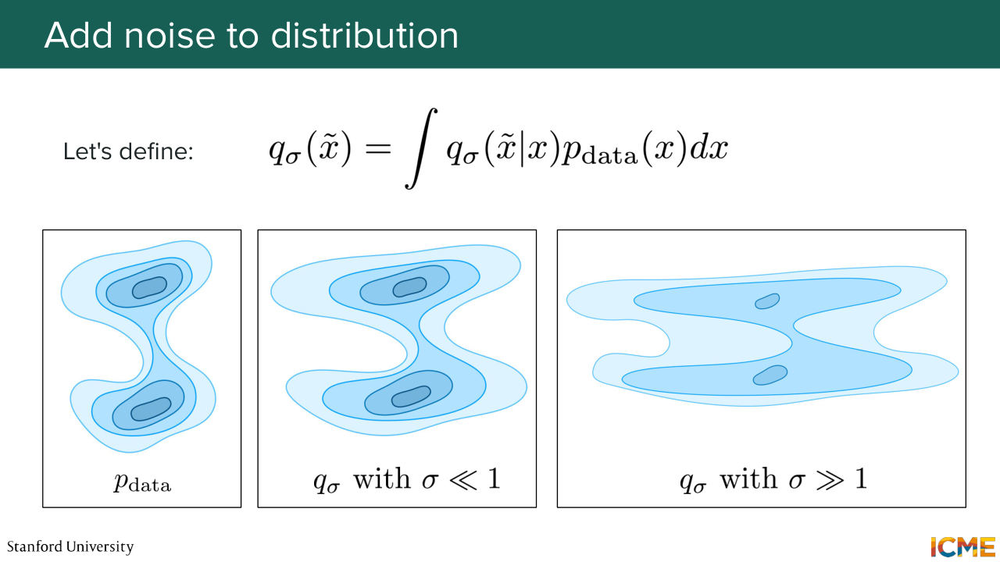
Shown briefly — discussed together with the adjacent slides.
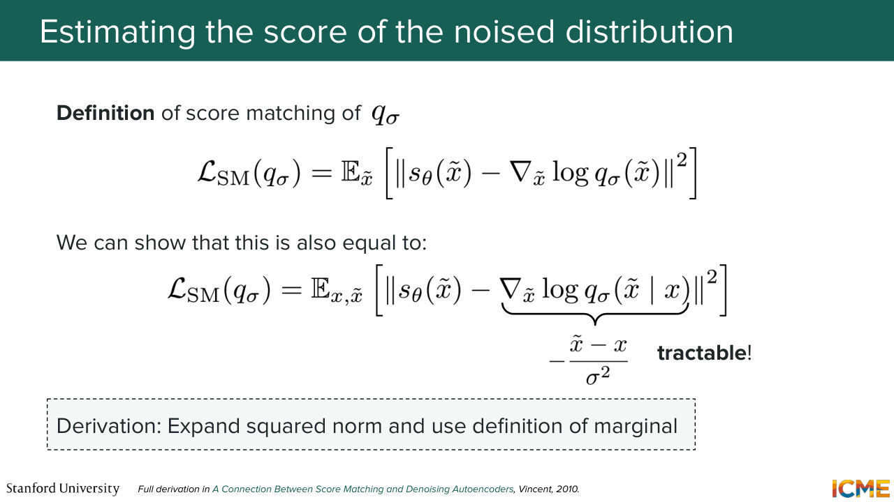
Shown briefly — discussed together with the adjacent slides.
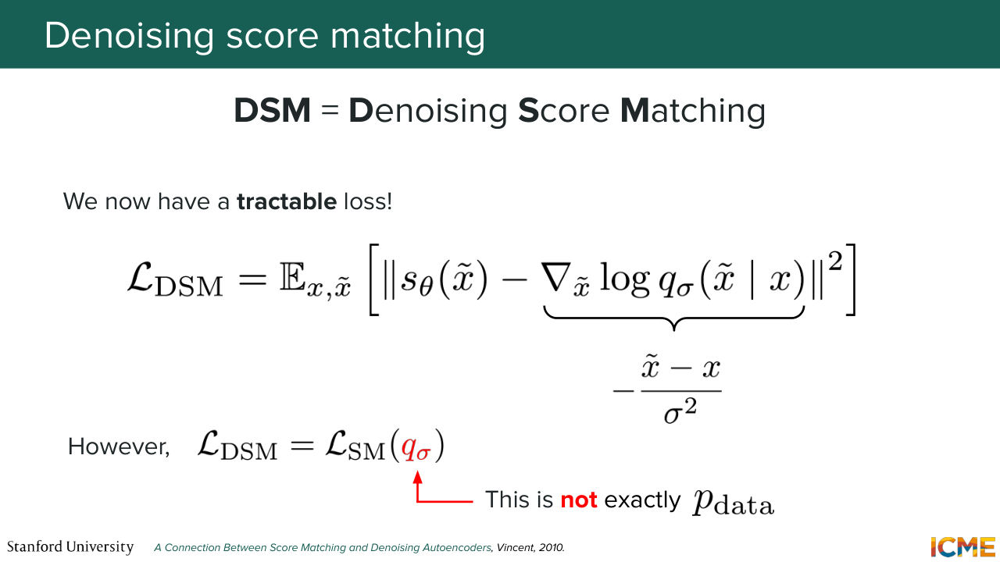
30:01 not on the original data distribution but on the noisy distribution. So if we take q sigma of x tilde, we have the squared distance between the score of x tilde and the-- sorry, the predicted score and the true score of x tilde. Well, there is a paper that showed that this is actually
30:31 equivalent to optimizing for another loss function, which is this one, which is s theta of x tilde minus the score, but conditioned on each data points of your training set. And so why is this good news? It is because that conditional score is something
30:57 that we already saw. It is tractable, but we have a problem. And the problem we're going to see later. Before we do that, I'm just trying to see if we have time to derive it. So the derivation is in between being trivial and not trivial. It's in the middle. I would say the proof is quite nice. It is not required for you to know for the exam.
31:28 So I think in the interest of time, I'm not going to do the full proof, but I'm going to show you how you can derive it just through the main step. So what we're saying is we have the original score matching function, which is the one at the top, which is the squared distance between the score of the noise observation minus the true score of q sigma.
32:08 32:14 What we're saying is optimizing for these loss function is the same as optimizing for this one. So the expectation is over x over your training set and then x tilde, which is given x. And so it's expectation of, again, the score of the noisy observation,
32:41 but this one minus the true score of the conditional observation condition on x. So what you want to show this is the same as optimizing for this, which is tractable. So the trick here is to recognize the fact that you have a distance of two quantities, let's say, a
33:10 and b, which is something that you can expand as follows. So the distance between a and b squared is a squared minus 2 dot product of a and b plus this square norm of b. And what you see is-- so these two loss functions, you want
33:44 to optimize them with respect to the parameters of the model, which is theta. And so you first realize that the b term in both loss functions, they are not a function of theta. So actually you don't care. So this one you ignore.
34:08 And then you look at just the first term, the a term. And you just realize that these terms are the same. So this one you also don't care. The only thing that you care is showing that the expectation across x tilde of the dot product between the two is the same as the expectation of over x and x tilde of the dot product between these prediction
34:40 model and this conditional score. You want to show that these two are equal. And this is what the proof is showing. So if you're interested in the details, I would highly encourage you to take a look at the original paper, which is the denoising score matching paper in the appendix. So it's maybe a five or six-line derivation.
35:06 And what it does is it just leverages the definition of q sigma and then just does some nice term expansion and term identification. So all I want to say is that this equivalence is not pure magic. It's just math, math. And what is great about it is that we're
35:33 able to optimize the loss of the score matching for the noisy distribution using a tractable loss. [AUDIO OUT] So the question is, the score of the noisy data is equal to the score of the conditional. Well, not exactly, but what your model s theta of x tilde learns
36:06 ends up being the same. And the reason for that is because here what you care about is the direction where you're optimizing your model. So you do gradient descent typically. And what you care about is the gradient of that loss with respect to theta. And so that's why we have this whole derivation to just show that the loss at the bottom
36:35 is equal to the one at the top, plus some constant that is not a function of theta. And for that reason, if you optimize the loss that is tractable from the bottom, it's the same as optimizing the loss from the top. [AUDIO OUT] They're not equal. Yes, exactly. Yeah, yeah. Great question. Any other questions on this?
36:58 Yeah. [AUDIO OUT] Yeah, yeah, yeah. Great question. So the question is, what is the intuition behind this being the same? So I think the intuition goes back to the way you define q sigma and the way taking the expectation works. So here what you're saying is if you take a look at scores
37:49 conditioned on points from the training sets, so if you take a look at this, and then if you somehow see all the different scores from all the different points conditioned on these points, then on average is going to be the same as if you were to actually take the score from the overall noisy distribution. That's the rough intuition.
38:22 Does that make sense? OK. OK, cool. I'm looking at the time. So let's see. Yeah, so again, the proof is not something that we will expect in the exam. So feel free to just take a look at it if you're just curious. But it's not required. So this is also called L of DSM, so Denoising Score Matching.
38:55 And again this loss is tractable because you know the score of q sigma of x tilde conditional on x, because this is a score of a Gaussian. So just recapping where we are, what we wanted to do is to estimate the score of the true distribution. So what we said was, OK, it's actually not something we can do. Let's fall back on an easier setup.
39:26 And what we said was that the easier setup was that in the Gaussian case, you are able to analytically compute the true score. So what we did is we took the true data distribution, and we noised it. And what we showed was that optimizing for the loss that is not tractable is the same as optimizing for loss that is tractable.
39:56 So in other words, you are able to estimate the score of a noisy data distribution. But it is still not equal to pdata, because what you want is pdata. You don't want the noisy data distribution. So it's only something that is going in the direction of what we want, but it's not exactly what we want. So let's see what this q sigma looks like.
40:31 So what we want, again, is to go from a starting point towards the data distribution. But here we do not have the score of the true data distribution. So how about if we take a noisy distribution
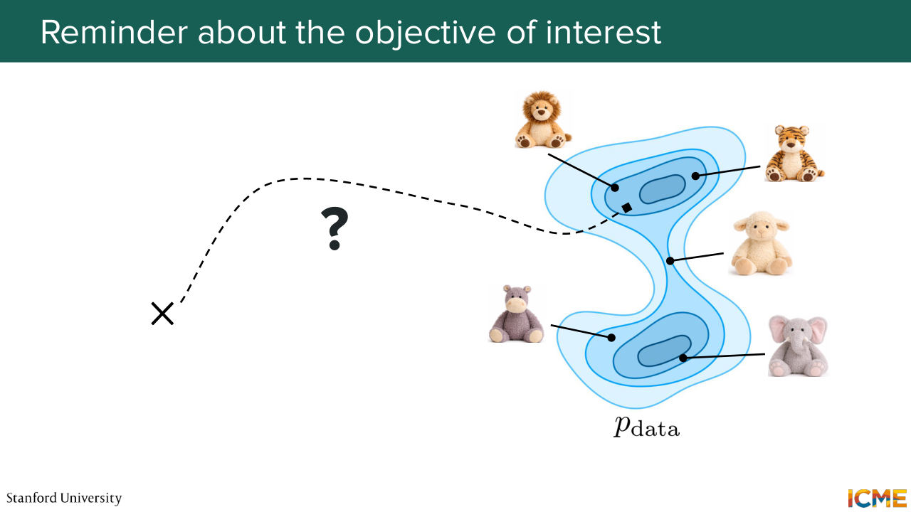
Shown briefly — discussed together with the adjacent slides.
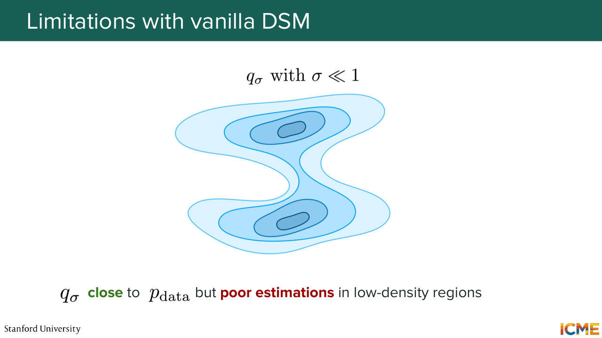
40:49 that we can compute where sigma is very, very small. So when sigma is very, very small, q sigma is very close to pdata distribution, because we noise it just a little bit. Well, the problem is that if we take q sigma with sigma that is very small, then we'll just have poor estimations of the score in low-density regions.
41:18 Do you see why?
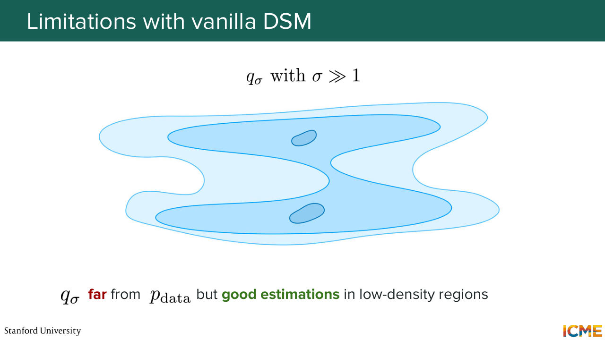
41:25 So I'm probably going to just explain this. So the good thing is it's already there. So I'm just going to fall back on the definition of the loss here. So this is the loss that we're optimizing. So what that means is that we want to optimize on the loss that is around the distance between the predicted score and the score
42:01 of the noisy distribution q, which is equal to this. So you're weighting your loss function with respect to how likely your points x tilde are to appear. So in other words, if x tilde is not likely to appear,
42:40 then the fact that it is off from the true value is not something that is going to be materially noticeable in the loss. So the model will not really be incentivized to make predictions accurate for x tilde that are not likely to appear. OK.
43:05 So does this part make sense? So what I'm saying here is we are able to estimate the score of this noisy data distribution, but we're not able to estimate it accurately in places of the space that are not likely to appear under q sigma. That's what I'm saying.
43:31 And the problem with that is if you sample from a distribution that is easy to sample from, for instance, a Gaussian, well, most of the time you're in regions that are low density. So if you use the score of a noisy distribution with a small noise, then you will not have estimations of that score that will be accurate in those low density regions.
44:00 So you will not be to accurately go towards the high-density regions. So in other words, I'm going just to explain this a bit more on an illustration here. So it's as if we were saying that we have our complicated
44:31 data distribution here that we have maybe noise a little bit. So it's like this. So this one is pdata, and this one is q sigma. So what I'm saying here is we are able to compute the score of this q sigma, but we're not able to estimate it accurately in spaces of low density, so for instance, here.
45:01 So what that means is if I sample an observation from an easy distribution that is in a low-density region, then when I'm going to use the score to get closer to that region, those estimates they may be super off. So I won't be able to come towards where I want. And that is the problem with a small amount of noise. So what do you do, well, you can tell me just increase the noise,
45:39 then. Because if you increase the noise, then if you add enough noise, like, let's suppose q sigma with sigma big, then that point in space will be covered with a high enough density such that you can have more accurate estimations of the score of the noisy distribution. But the problem is that now q sigma is too different from your p data.
46:18 So in other terms, what you're learning is not exactly what you want. It's like something that's different. So you have this trade-off. If you have too little noise, then it's good. What you're trying to learn is very close to what you actually want to learn, which a the score of the true data distribution. But the problem is you do not have good estimates in low-density regions.
46:44 But at the same time, if you have too high of a noise, well, the distribution now is too different from the true data distribution. But you now can have good estimations. So it's a little bit like the bias variance trade-off in a sense. You just don't have both at the same time in this case, which is making the situation complicated.
47:13 Yeah. [AUDIO OUT] So the question is, if we configure the Langevin sampling in a way that can work, then we can make this work? So the answer is yes. So it's the next part. And we're going to see how we can do that. But yeah, that's a good intuition. [AUDIO OUT]
47:53 So the question is, why is it poor of an estimation in low-density scores? This is true. It's correct, this one. Not this one actually, the tractable one is the true one. But the only problem is that the tractability of your loss function is also a function of how you configured it
48:18 in terms of the expectation. So the expectation here is over q sigma, meaning that if you have an x tilde, which is in low-density regions, then it's just not going to have a high weight loss, which is just not incentivizing your model to actually properly learn it. So in a sense, it's a loss-weighting problem.
48:47 [AUDIO OUT] So the predicted score will be inaccurate. Yes. Yeah. [AUDIO OUT] Yeah. So the question is, how about the regularity conditions of the function? So here let's assume that this is not a problem. Here let's assume it's not a problem. But you're right that, for instance, for sigma very small
49:22 you have indeed very spiky ones. This is the correct intuition. So yeah. [AUDIO OUT] Yes, exactly. So high noise smoothens it. Low noise produces some spikiness around those training data points. OK, cool. I think this is probably the most challenging part of the lecture. So yeah, hope you got the intuition as to why that is a problem.
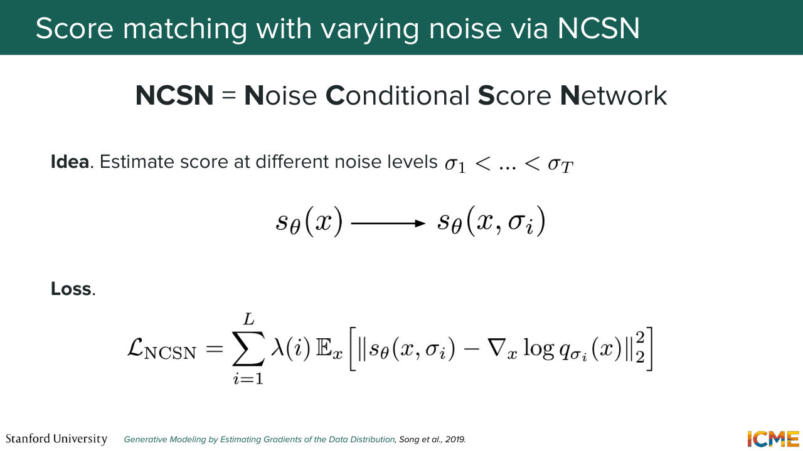
49:50 So what are we going to do? And you had the right intuition in terms of making some tweaks to the Langevin sampling. So what we're going to do is now we're not going to learn the score of one distribution. We're going to learn the score of several distributions of several noise levels. So instead of predicting s theta of x, we're going to predict s theta of x where you're in space
50:22 and sigma your noise level. And the idea here is to consider several distributions, one with a small amount of noise, then bigger, then bigger, then bigger. And the way you're going to use those different score estimates is at the very beginning-- so if I show you my beautiful charts here. At the very beginning, what you care about is knowing roughly where to go,
51:01 where to go in space, roughly. So here it's fine if you have the score of a distribution that is quite approximate from the true one, as long as you know roughly where you need to go. So the idea is here, you will use the score of a distribution that has been very noisy. And let's say you're going to go somewhere here.
51:31 And then at that point, you're going to use the score of a distribution with less noise, because maybe that distribution with less noise covers that region. And now you know maybe a little bit better where the actual high-density regions of the true data distribution is. And you're going to go again with lower amount of noise
51:57 again and again and again until coming here.
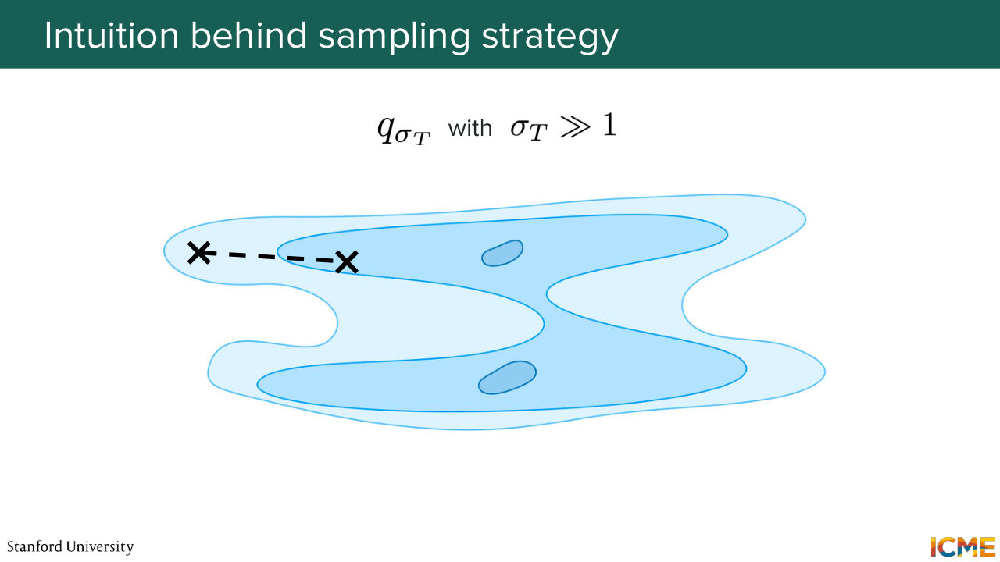
52:02 So that is the idea. You're not going to only rely on one kind of noisy distribution
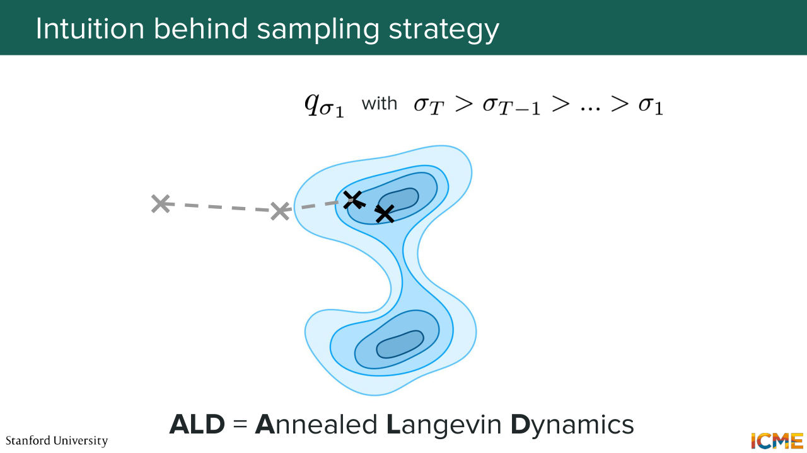
52:08 with a small amount of noise or one with a higher amount of noise. You're going to actually rely on all of them
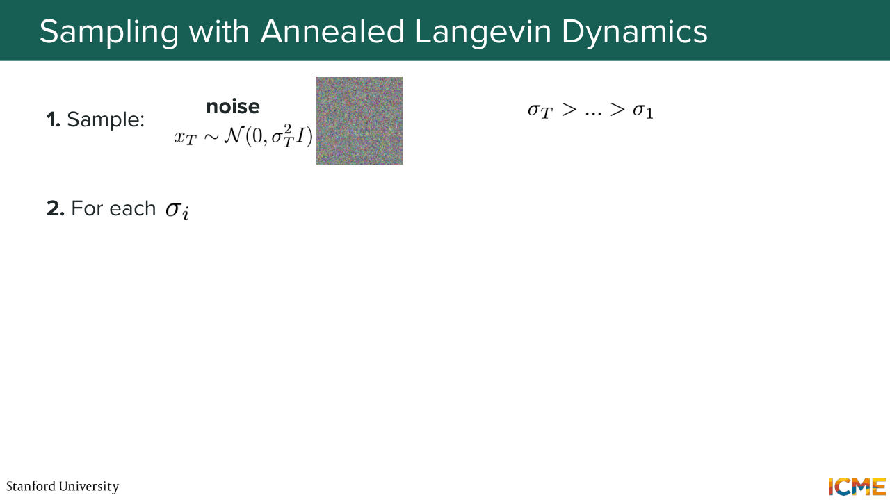
52:15 in a way that will make this problem easy for you. So at the very beginning, what you care about
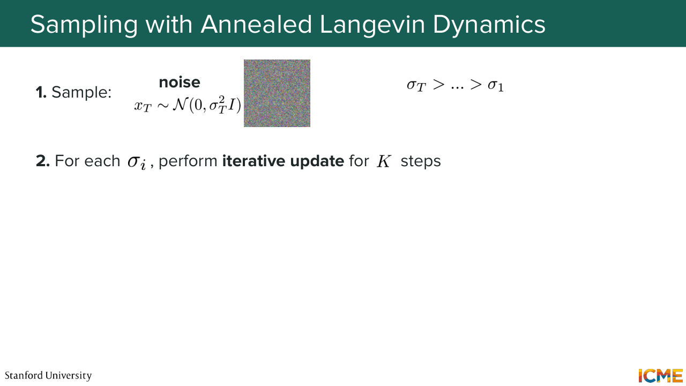
52:22 is roughly where to go. And then the more you get closer, you care more and more about the little details.
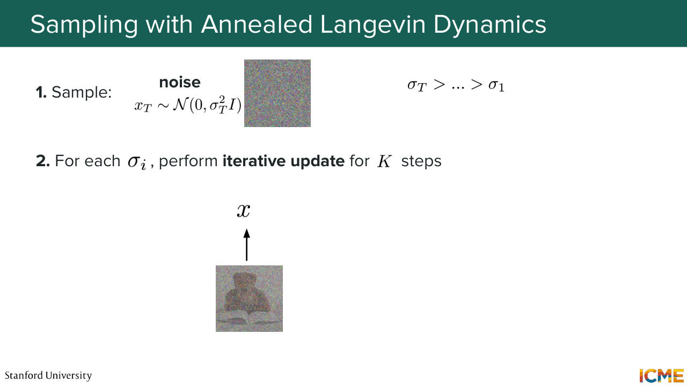
52:32 And these methods is something that you will recognize with the following name, so NCSN, Noise
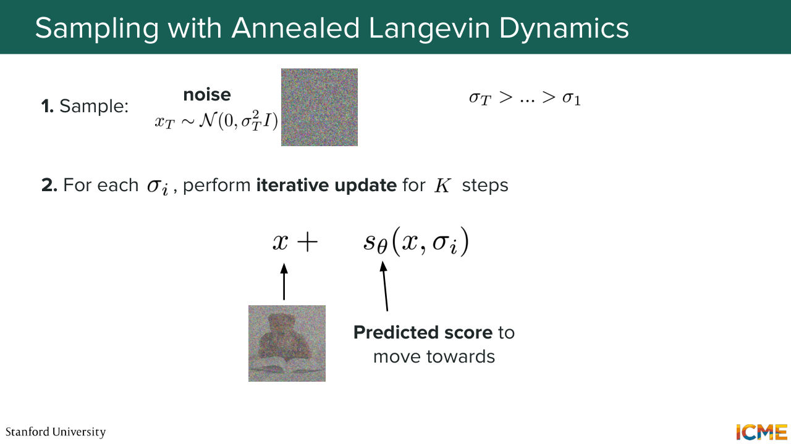
52:40 Conditional Score Network. So is this framework of learning scores of different noise
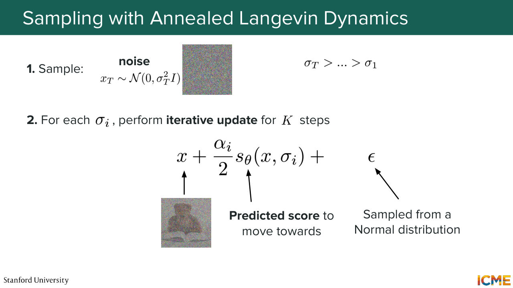
52:47 levels. So I just want to reiterate what I drew on the blackboard.
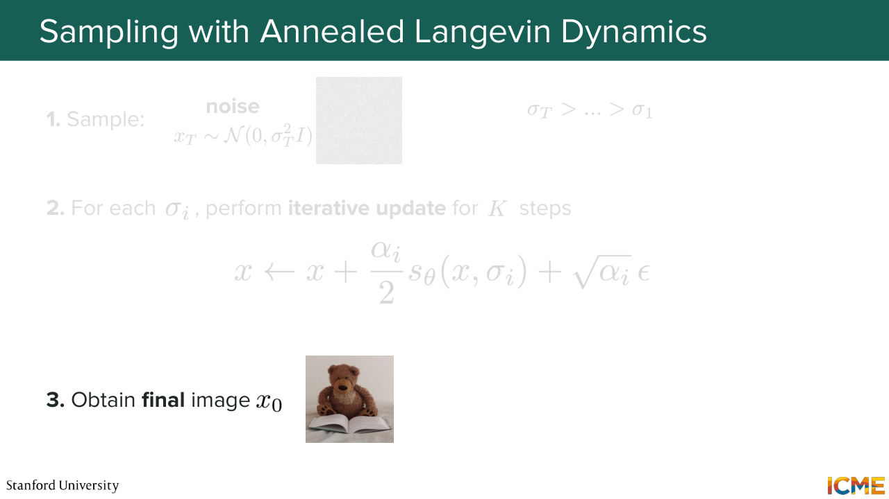
52:53 So let's suppose you sample an observation from a distribution that is easy to sample from that is far from your actual data distribution. So what you do is you will actually rely on the predicted score from a noised data distribution that is very noisy. And you're going to go step by step by relying on scores from distribution that are less and less noise until coming to your last point, which
53:29 is something that hopefully will be very, very close to the pdata distribution, which is going to be a noise data distribution with a very low sigma. OK. So does that make sense? Yeah? OK. Cool
53:53 So back to your intuition on the Langevin sampling. So your intuition was 100% correct. This way of sampling things that I explained with varying noise levels is actually called annealed Langevin dynamics. And it's this idea of starting with a high amount of noise and decreasing the noise progressively.
54:23 So you will also see that in the literature as ALD. Yeah. [AUDIO OUT] Yeah. [AUDIO OUT] So the question is, what is exactly the trade-off here? So the idea is with a high amount of noise,
54:55 if you add a high enough amount of noise, then previous low-density regions will be covered by the noisy distribution. And if you add enough noise, like, with a very high amount of sigma, then you will cover it. The only problem is-- so you can learn the score of that very noisy distribution.
55:20 But the problem is that the true score of that noisy distribution is going to be far from the score of the data distribution. So that is the trade-off. [AUDIO OUT] Right. So the direction that it will be pointing will be roughly where you want to go, but not exactly. But the idea here is that the very beginning you don't really care. So for instance, if from here from Stanford,
55:51 I want to go to New York, I know roughly I want to go this way. And then I go this way. And then the more I get closer, the more I want to refine exactly where New York is. Yeah. OK, cool. There is something else I wanted to say. OK. So there's something else I wanted to say,
56:17 which I think we'll cover a little bit later. But first, we're going to cover how we're going to sample new observations using this annealed Langevin dynamics. So here what you would do is sample some noise from very noisy Gaussian with a high amount of noise. And what you're going to do is for every noise level,
56:46 you're going to run your Langevin sampling. And this is the formula that we saw at the very beginning, which is you add the point that you're at with the predicted score, which is where you want to go, and then some amount of noise, which allows for a bit of diversity. And once you do that for all noise levels until coming to a very small noise level,
57:15 then you end up with the actual image. So one thing that I want to say regarding the score, you can think of the score as being a compass. Now, when you are in the forest and you want to see where the city is, just follow the direction of the compass. It's the same idea here. So we're in the space, space of images.
57:45 A lot of these regions of space are images that are actually not real images. But what you want is to go towards regions of high density with respect to your target data distribution. So it's as if you were following a compass to come at your destination.
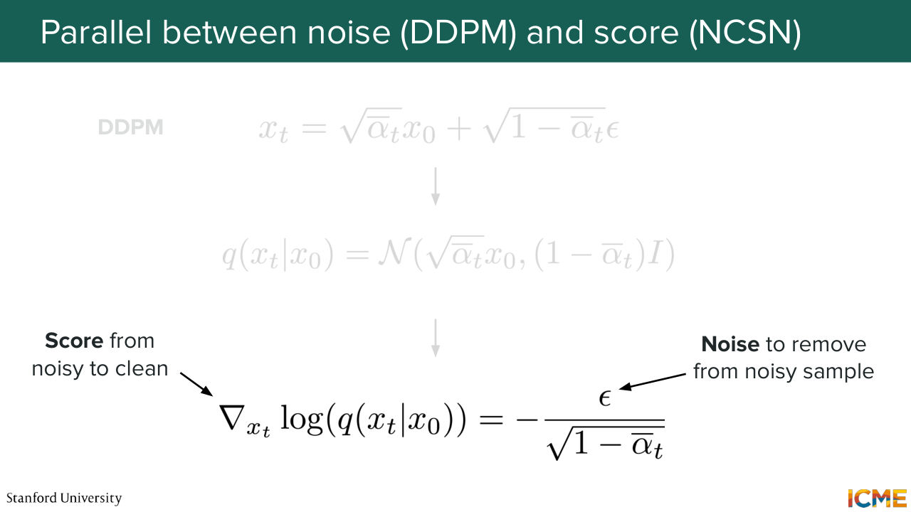
58:09 OK, cool. So last time-- you had a question? [AUDIO OUT] 58:22 Oh, yeah. So the question is data distribution can be any data distribution? Yes, yes. OK. So now what I want to tell you is how what I'm telling you now here relates to what we saw last week. So if you remember, DDPM was all about taking a clean image
58:50 and then noising it. So if you remember, we had these coefficients. And for instance, in this case, the noised image was the square root of alpha t bar times your clean image plus square root of 1 minus alpha t bar times the noise. What I told you here also involves noise.
59:15 So a natural question that you may ask is, how does the score relate to the noise prediction task that we saw last week? Well, the forward process of xt given x0, you just see that it is a normal distribution centered on the square root of alpha t bar times x0. And you actually realize that the score of that distribution
59:49 is equal to minus the noise that you added over some coefficient. So in other words, these two quantities, so the score meaning where you should go to end up where the clean images are and the noise that you added, are actually two quantities that are linked.
1:00:16 And they are linked such that the score is equal to minus the noise that you added. And that makes sense. So why does that make sense? So I'm just going to clean that part. Whoops. So why does that make sense? So here if you have your clean image
1:00:46 and then if you noised, so it's as if you added some amount of something noise. But then if you want to go back to high-density regions it's basically your score. So it makes sense that the two are in opposite directions.
1:01:10 So by the way, does that make sense that it is the formula? So maybe I can also derive it. So remember that the score of a normal distribution is equal to minus x minus the mean over the variance. So in this case, we have--
1:01:46 so x, what is x? It's a noisy image. And the noisy image has the following formula. So noisy image is the square root of alpha t bar times x0 plus square root of 1 minus alpha t bar times epsilon. You subtract the mean of the normal distribution, which is this square root of alpha t bar times x0.
1:02:13 So this gives you minus. And then this is square root of 1 minus alpha t bar epsilon over your variance, which is 1 minus alpha t bar. Which is exactly what you have on the slides. Does that make sense? OK. Cool. So this is just to give you a parallel between NCSN and DDPM.
1:02:54 So these two methods are just two different ways of noising your sample at the end of the day, because one is taking some weighted average between the clean sample x0 and the noise, and the other one is just adding noise with just sigma. So that is the reason why this, so DDPM, you
1:03:21 will see it be characterized as being variance preserving. Because if you take the variance of xt is going to be roughly equal to 1. And this is assuming that your x0 are normalized. They have a mean of 0 and variance of 1. So if you take the variance of xt, it's roughly alpha t bar plus-- so square root of alpha t bar
1:03:48 squared plus square root of 1 minus alpha t bar squared, which is equal to 1 roughly. And this formulation, the NCSN one is going to be mentioned as being variants exploding. Oh, I have to go way back in the slides. This one is going to be variance exploding because you're going
1:04:16 to add more and more noise. And the noise is going to just increase a lot. So it's not bounded by 1. OK. Cool. So, so far what we've seen is noising images using a discrete set of noise increments.
Shown briefly — discussed together with the adjacent slides.
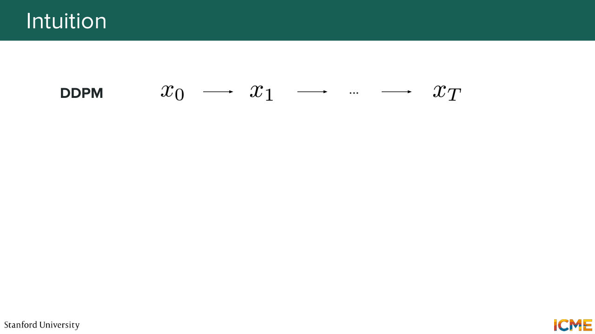
Shown briefly — discussed together with the adjacent slides.
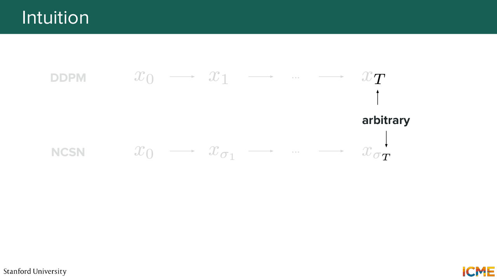
1:04:42 But one could argue that these discretization is arbitrary.
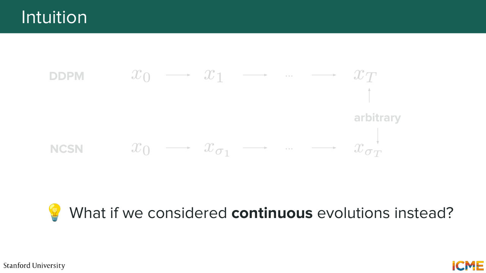
1:04:50 It is something that you need to decide before starting your training process. So one idea is to actually consider continuous evolution instead of discrete one. So the reason why you would be interested in doing that is because we also have a field of math, which is in differential equations that
1:05:15 have a bunch of very convenient toolkits to solve these kinds of equations. So one idea is to actually start from what we saw in DDPM and NCSN and try to see how they would be
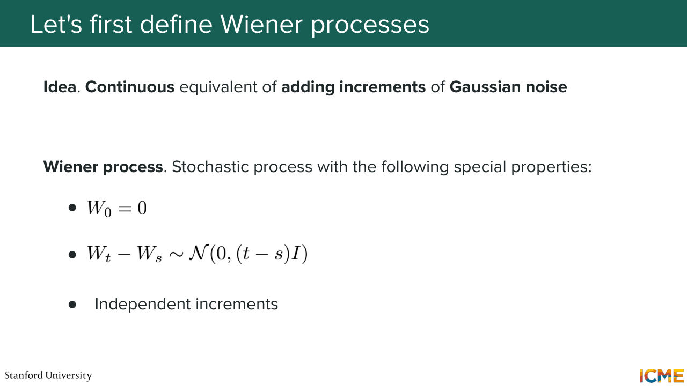
1:05:32 like in the continuous world. So in order to do that, we first need to have an equivalent of noise increments. Because up until now, the way we added noise to clean images was via sampling from a Gaussian distribution. So it's like normal distribution of mean 0 and covariance matrix, the identity, and then just adding noise like this.
1:06:04 But what you want is to have a continuous equivalent of having these noise increments. And this is where the Wiener process comes in. So who has heard of the Wiener process before? Yeah. No one? Maybe one. OK. So the Wiener process is a type of stochastic process.
1:06:31 So stochastic process is a family of random variables that are indexed by some index t, let's say, the time. And a Wiener process is a stochastic process that follows the following properties. So we have W0 by definition that is equal to 0.
1:06:55 And the difference between Wt and Ws, which is an increment, follows a normal distribution of mean 0 and variance t minus s times I. And these increments, so these differences are actually independent from one another. So you can think of the equivalent of a random walk. So you walk one here and then one
1:07:26 there but in the continuous world. So one thing that I want to say is that what is independent is the increments and not the value of the ability itself. Because you can imagine that Wt will depend on Wt minus 1
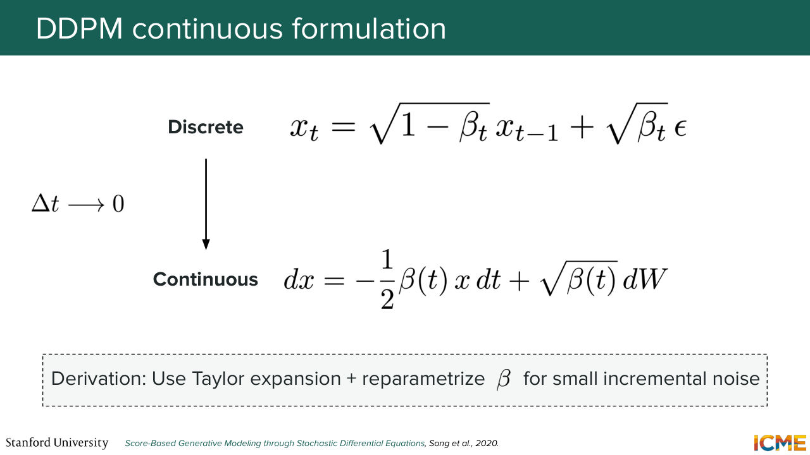
1:07:49 and so on. So what we're saying is that the increments are independent from one another. So with that in mind, what we can do is to derive a continuous formulation of DDPM and NCSN.
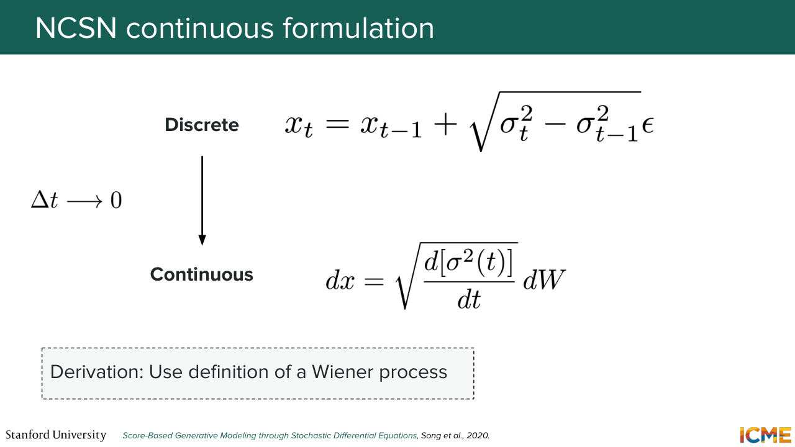
1:08:07 So in the interest of time, what I'm going to do is to only derive the DDPM case.
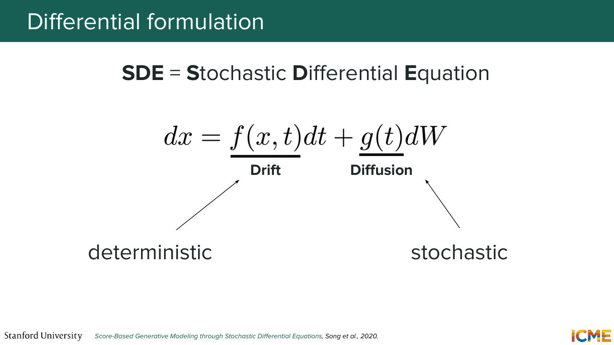
Shown briefly — discussed together with the adjacent slides.
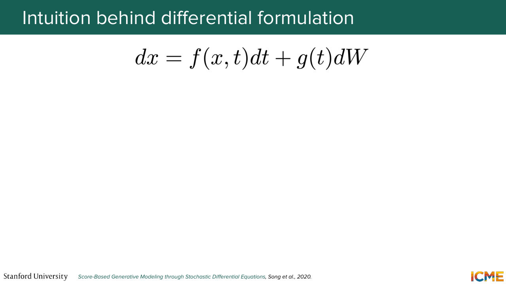
Shown briefly — discussed together with the adjacent slides.
Shown briefly — discussed together with the adjacent slides.
1:08:17 So what we're saying is we're starting
Shown briefly — discussed together with the adjacent slides.
Shown briefly — discussed together with the adjacent slides.
1:08:25 from the update formula that adds noise to a less noisy image.
1:08:31 And what we want is to obtain a continuous way of expressing that.
1:08:37 So I'm just going to rewrite what is on the slide. So xt is equal to square root of 1 minus beta of xt minus 1
1:08:48 plus square root of beta times epsilon. So if you remember, beta is your noise schedule. It's the amount of noise that you add at each time step. And so what you want is to have an expression of a differential evolution in x as a function of everything else.
1:09:16 So what I'm going to do is subtract that quantity with xt minus 1 And then have t and t minus 1 be very, very small so that I can consider this to be continuous. So what I'm going to do here is just some math. So I'm taking xt and I'm subtracting xt minus 1. So it's going to be square root of 1 minus beta minus 1,
1:09:50 xt minus 1 plus square root of beta t epsilon. So beta t is the quantity of noise that you add between two discrete steps. What I'm going to do is to define a quantity that I'm going to write beta parenthesis t, which is the rate of noise at time t times
1:10:24 dt, an increment of time. So what this is saying is when we're going to have t10 to 0-- so this is going to 10 to 0,
1:10:35 but we're going to have some rates of noise that's going to be nonzero, that's going to be your schedule. So if I pause that, so this becomes xt minus xt minus 1 is equal to, so 1 minus beta t dt minus 1 xt minus 1 plus square root--
1:11:18 I'm going to also replace it here-- of beta t dt epsilon. So far I've just plugged in the new beta t expression.
1:11:32 So what we're going to obtain now is actually something that's going to be quite nice. So if we tend t to 0, so if we consider a continuous evolution, xt minus xt minus 1 is also going to be a differential evolution.
1:12:13 So here, I'm going to rewrite xt minus xt minus 1 as just d of x. So when dt tends to 0, you have Taylor expansion formulas that tells you that square root of 1 minus something that tends to 0, which is equal to 1 minus 1/2 of that something.
1:12:41 So this is just Taylor expansion. So here, I'm going to say it's roughly equal to 1 minus 1/2 of beta t dt. xt minus 1 is roughly going to be x. So this is 1 minus this minus 1, because you have the 1 here, times x plus--
1:13:13 so you have square root of beta t. But then the Wiener process that we defined is such that a small increment in the Wiener process is actually something that you can rewrite as being square root of dt times epsilon,
1:13:36 because it follows a normal distribution of variance dt times I. So here, I'm going to recognize the square root of dt times e. That's right. Square root of dt times epsilon as being dW, which is equal-- so it's as if it was equal to d of x is equal, so this is going to cancel out, 1/2 of beta x dt plus square
1:14:11 root of B dW. And now you may be wondering, why am I writing all these equations? Why are we doing this? Well, you're going to see that when we rewrite this,
1:14:26 for instance, for DDPM and then for NCSN, what we realize
1:14:33 is that we have an expression of dx equal to something times
1:14:39 dt plus something times dW. So these two terms have very specific names. So one is called the drift. So this quantity is called the drift. So it's deterministic. And this one is called the diffusion, which is what is stochastic. And you actually have a nice intuition about it
1:15:06 when it comes to how x varies in space. So if you suppose x to start from here and you only have a drift term, what you're going to have is just deterministic evolution using f of x and t. So you're going to go from x to x plus dx using f of xt times dt.
1:15:34 And then you're going to repeat this process again and again in a deterministic fashion. So this first term is deterministic. Now let's look at what the second term does. So here you start from a point x, and you add some quantity that is a function of noise, Gaussian noise. So here it's going to be something that is noisy, so
1:16:05 the stochastic part. Which means that if you take the whole expression, you're going to end up with something-- so one step from x to x plus dx is going to be including a deterministic step and a stochastic step. And this is something that will follow the slides here.
1:16:34 So all I want to say is that DDPM and NCSN can actually be transcribed from their discrete formulations to a continuous one. So when you see these formulas, just know that it is just us transcribing them to be continuous. And the reason why we want to do that is because this is going to be an SDE, so Stochastic
1:17:01 Differential Equation, for which the field already has a lot of techniques to solve them. And I'm just going to tell you now about why the DDPM formula makes sense just from an intuitive perspective. So what we're saying is in a 2D space, so this is the origin.
1:17:28 This is 0. And then we have a vector x. So what we're saying is that an increment in x is going to be negative with respect to where x is. So it's going to be somewhere like this. And then we're going to have a little bit of noise added
1:17:50 to it, so maybe like this. So in other words the noising process, the forward process is bringing x closer to 0 and adding some noise so that this converges to a variance of 1, which is what DDPM is about. Because the DDPM you take a clean image, and then you noise it with convenience coefficients
1:18:26 such that after t steps, it becomes a normal distribution of mean 0 and variance 1. And this is exactly what you're also seeing by interpreting the terms of this equation. Does that make sense? So I just want to tell you this to just tell you that these formulas are not just formulas. They have a meaning if you think about each term.
1:18:54 And here this expression of the continuous evolution of the forward process for DDPM actually makes intuitive sense when you're just writing things down. [AUDIO OUT]
1:19:12 So question is, why is it useful? We're going to see it exactly now. So I'm going to tell you now what is useful. So the reason why it's useful is 1, you're not going to have to necessarily define discretization steps between each noised images. So you're not going to say, OK, I need let's say t steps to do the whole noising process. So that's the number 1. And number 2 is there's a number of results
1:19:44 in the field of stochastic differential equations, which is essentially what this is. There's a number of results that will allow you to solve the reverse process.
1:19:57 Because what you want is to be able to denoise images. So here what we're doing is we're just noising images. But what we care about is how to denoise images, which is the reverse process. And the reason why it is convenient for us to think in the continuous world is for us to be able to leverage these results. And we're going to see these results in a few minutes.
1:20:28 OK, cool. So here I just want to say that this drift term f and the diffusion g is the following for DDPM, but it is this form for NCSN. And you see that there is no drift term, and it is mainly because we're only adding noise. And the idea behind DDPM and score matching
1:20:57 is actually something that was developed in parallel. So here what I want to say is just a historical evolution of how things happened and how we came up to that unified view of describing the forward process in order to solve the reverse process. So on the one side, the diffusion literature had this given branch with a 2015 paper just describing how you can derive a tractable loss in order
1:21:27 to solve for this, the diffusion problem. And then you have the DDPM paper which came out in 2020 that successfully applied that for images. That was on the one side. And on the other side in to score matching world, you had this principle of using the score to go from a starting point to the distribution and the fact that it alleviated this intractable normalizing constant.
1:21:57 And then there was a paper that described how to do that in the case of a noise distribution. And then the NCSN method is actually something that came out with a later paper. And there is one paper that unified both of these paradigms, which is a paper called Score-Based Generative Modeling Through Stochastic Differential Equation, which is a paper I highly recommend reading.
1:22:25 It's actually written by folks from Stanford, so Yang Song and coauthors. And it is from that moment that the community has seen these two paradigms as being unified. And this is the way we have seen this play out. So now why did we do this in the first place? So our goal is to recover clean images.
1:23:01 So we know how to noise them through this forward process that we now are able to express in continuous term. What we care about is to denoise into clean images. And so here what we're doing again predicting the score. So this score formulation is just a regression on the conditional score which
1:23:30 we saw was tractable, which is, as we saw, minus epsilon over some coefficients. And the way you would train such a model is following this loss function, which is an expectation over clean images that you noise. And so what you do is you sample a clean image and then
1:23:56 some noise and time step. And then what you do is you obtain your noised image. And so here noised image is just a combination of the clean image and the noise with some alpha and sigma t, which can be chosen either in the DDPM way or another way. And what you do is you predict the score
1:24:20 that you know is tractable using your noised image and your time step. But now you may be asking, well, why do
1:24:35 you want to predict the score? Because we saw that for NCSN, we had the score that we used in order to sample new observations from the data distribution. But we saw in the case of DDPM that we actually predicted the noise to remove. So we had these two different formulations. So now the question that you may ask is, why do you want to focus on the score here?
1:25:08 And the answer to that is that the forward process that is described by the SDE can be reversed through a reverse SDE that involves the score. So I'm just going to repeat exactly what I said. So the forward process, which is described by the SDE,
1:25:35 is something that you can reverse through a reverse SDE which involves the score. And the reason why the score is popping up here is due to some derivations that we're not going to go here, but this is just a result that comes from a paper from 1982. So it's a result from the SDE world that were just leveraging here.
1:26:04 So that is one of the points why we're caring about the continuous formulation is because we want to be able to leverage results around these SDEs, and this is one of them. And so now I want to walk you through what that reverse process equation is about. So I told you that the forward process was composed of a drift
1:26:36 term and a diffusion term. So it was dx equal to f of x and t times dt, which is the drift, and then plus gt times dW, which is the stochastic term, the diffusion term. And what we're saying is that in order to do the reverse process, we actually cannot just have the same equation. We need to add a correction in the drift that
1:27:08 involves the score. And here is the intuition. The intuition is that in the forward process, we have added some stochasticity that made us deviate from where the actual data point was. So as a result of that, when we want to reverse that process, what we actually want to counteract this phenomenon
1:27:39 is to go towards the regions of high density scaled by that diffusion factor. So what I'm telling you is that the reverse process SDE is obtained through some derivation. But the way you would interpret it is that the correction to the drift is due to the fact
1:28:04 that you diffused in the forward process. And this made you be further from high-density regions. So this is what the reverse process is like. So it's dx times the drift, which is the original drift minus the diffusion coefficient times the score times dt plus your diffusion term. And here we noted dW bar because the Wiener process
1:28:35 from the reverse process is actually different compared to the one from the forward process, which is
1:28:43 why we noted this with the bar. And we're just going to conclude with how you would do inference.
1:28:51 So to do inference, you just sample some noise. And then again what you do is you leverage the nice results from the fact that you are handling SDEs, Stochastic Differential Equations. So you, for instance, will use a solver called Euler-Maruyama that is able to numerically solve the reverse process. So here you can think of it as a numerical method that will let you go from your original ex back to the endpoint using the reverse process equation.
1:29:28 And you will obtain your final image, which will hopefully
1:29:33 be an image that is satisfying. And that's going to be your final image.
1:29:40 Yeah. [AUDIO OUT] Yes, so this one-- yeah. [AUDIO OUT] Yeah. So here, you can think of this equation as being a discretization of the reverse SDE which is here.
1:29:57 So this is exactly this SDE, but you're doing it step by step. [AUDIO OUT]
1:30:04 So the question is, what is fx of t? What is g? So these are the coefficients that are here.
1:30:10 So for instance, in this case, f of x and t is minus 1/2 of beta
Shown briefly — discussed together with the adjacent slides.
1:30:15 times x. And g is square root of b. [AUDIO OUT]
1:30:21 It is the same. So the question is, this is for the forward. But this f and g are the same in the forward and backwards.
1:30:28 Yep. And with that, I'm going to give it to Shervine.
1:30:34 Thank you, Afshine. So I'm going to come here and sing a very similar song as the one I sang last week when we transitioned from DDPM to DDIM. So we're going to look at this reverse SDE equation and look at what is not optimal in practice and see what we can do about it. So as Afshine mentioned, you have this Brownian motion.
1:30:59 That is one term of that reverse is the equation. And what problem do we have with that? So as you saw in the transition from x and x plus dx, you have all these spikes that happen due to the stochasticity. And this process is the reason why we cannot take large steps when resolving it, because otherwise you would be
1:31:25 approximating a movement that is something that you look at the microscopic level. So you need a high number of steps in your solver to start with. And also the second point is that when you look at your errors that you do when you solve these reverse SDE equation, you have now two sources. You have the first source that comes
1:31:50 from the regular discretization step. And then you have the stochastic error that comes in, and they accumulate. So just like last week, I'm going to paint the picture of what we would like to have and see if we can get there. So what would be the right counterpart of an SDE in a nicer world?
1:32:17 It would be an ODE. So the ODE does have this term on the left but doesn't have any stochasticity. And going through each point that I mentioned, you would be able to gauge how fast you go depending on the regularity on the function of the left. So you have some methods that can take adaptive steps. And then the second point is that in terms of errors that you're committing, once you solve
1:32:47 that equation, they are only focused on the discretization of the left part. So you have less sources of error. And I'm going to sketch you a derivation for which only the high-level gist is what I want you to. So there are going to be some intermediary results that I'm just going to state. And some equations we don't need to know necessarily
1:33:15 how they are derived. I'm just telling you that they are there. So let's start from the forward SDE. As Afshine had mentioned it, you have this f of x and t term, the drift term, and the diffusion term. So it turns out that for equations that verify this equality, you can apply the Fokker-Planck equation, where you have this pt of x that comes up.
1:33:46 That is the probability of the flow. And you have two terms on the right that could be interpreted in physical terms by the term on the left that is a transport term and the one on the right that you see g squared on, which is the diffusion term. So the derivation of such an equation is non-trivial and is out of scope here. I'm just going to state that we are going through that results.
1:34:18 And then by rearranging the terms and using an identity on pt, we can come to another equation that is called the continuity equation that I'm just going to tell you that it's going to be something that we see in more details at the beginning of next lecture. But what's interesting about that continuity equation is that on the right side, there is a factor
1:34:54 that is to be interpreted as a velocity. And the velocity is dx over dt. So once you identify that factor, you can come up with an equation that this term that has been identified as the velocity needs to verify. And you come up with an equation that is indeed an ODE, and we call it the PF-ODE. PF stands for Probability Flows.
1:35:24 And let's look at that equation for a bit. So just like we mentioned a short time ago, f and g are modeling assumptions that are the ones that we had as assumptions once you derive this diffusion concept. And what about the score? So the score is also something that we can know. Because once you have a model that can approximate this score,
1:35:57 you just have to put x as inputs, and you can get the score. So what I want to say is that this whole term that popped up is all composed of components that we can know. OK, great. And now I'm going to re-emphasize each side of that PF-ODE.
1:36:24 So it's an ODE we said because we don't have a stochastic term, and it's probability flow because it's an ODE that comes from verifying the continuity equation, that is, an equation that is focused on the probability flow. And one interesting thing about that equation is that once you have an initial condition on PT,
1:36:50 you can fully characterize what P is. But this is something that you cannot say about x. Because as you can see here, if you have v that is solution-- that is part of this equation, then if you add-- if you do v plus v null, where v null verifies divergence of v null and pt equals 0, then v plus v null also can be plugged in here.
1:37:25 So all of that to say that the probability flow between the reverse SDE and here are preserved. But the trajectories are not. OK. So I went through a lot so far. Any questions? Yeah. [AUDIO OUT] 1:37:59 Yeah, fair. So the question is, what's the interpretation here? So we did all these equations to conserve the probability flow,
1:38:07 and the trajectories are going to be different. And they are characterized with this modified term on the v side. So instead of having these-- so you have this one half that came in, and that compensates for the stochasticity part that disappears. So you're going to still have trajectories that verify in aggregate the probability flow conditions,
1:38:35 but they are going to be different. And the interpretation is not average or anything specific. I would say it's just that in aggregate, they verify the probability flow property at each time t and x. [AUDIO OUT] Yeah. [AUDIO OUT] Yeah, yeah, yeah. So the question is, will they end up with the same properties
1:39:06 that you have the distribution at the end? And the answer is yes, because PT is preserved. OK. Awesome. And so I'm going to draw a comparison between solving that reverse SDE equation and using PF-ODE. So exactly as we mentioned here, the term on the left,
1:39:32 like the drift term, is compensated for that lack of stochastic term. And then the great point that you made is that we no longer have something that is stochastic. But once you have an initial condition, you deterministically know where you're going. So that's one big difference that you
1:39:56 might remember from last time resembles something that you know. And as a result, since the only source of diversity is now your initial draw, you have less sampling diversity. And interestingly, when you look at experiments, you have higher sample quality. And that could be explained intuitively by the fact that you introduce noise at each time step
1:40:27 enables you to explore regions of the space that you wouldn't have explored with a deterministic path. And you may self-correct your trajectory, as opposed to resolving an ODE that is only conditioned on your initial points and all the errors that you accumulate by solving the ODE numerically. So you have a nice interpretation there.
1:40:54 And of course, now that we have an ODE where we can adapt step sizes, you can now
1:41:03 resolve this faster, which is a nice property. And the fact that I told you that I'm
Shown briefly — discussed together with the adjacent slides.
Shown briefly — discussed together with the adjacent slides.
Shown briefly — discussed together with the adjacent slides.
Shown briefly — discussed together with the adjacent slides.
Shown briefly — discussed together with the adjacent slides.
Shown briefly — discussed together with the adjacent slides.
Shown briefly — discussed together with the adjacent slides.
Shown briefly — discussed together with the adjacent slides.
Shown briefly — discussed together with the adjacent slides.
1:41:08 drawing a very similar parallel between PF-ODE and the reverse SDE as the one I drew last week between DDIM
1:41:16 and DDPM, we can see a lot of shared commonalities that I've put here for reference.
1:41:24 And now let's look at how we can solve this equation in practice and if we can do even better than regular solvers. In order to do that, I'm going to introduce a way to assess complexity that is widely used in these papers called NFE. So it's the number of function evaluations. And what we want to do is for a sampler to get good quality results with a minimum amount of NFEs.
1:41:53 So it's a measure that makes intuitive sense in the sense that we want to minimize the number of forward passes that you perform on your model. And I'm going to introduce this notion of solving an ODE by the very simple method that some of you might know already, so Euler's method. If you consider this ODE dx equals v of x and t dt,
1:42:22 you can, based on your initial point and the derivative at that point, approximate the next point. But the issue with that is that there is quite a bit of errors. Even though it's just one NFE per step, you end up with the results that might be imprecise. So people to account for that fact are using a fancier techniques, so Runge-Kutta 4 is one of them that--
1:42:54 so I represent it here on this graph the intuition of it. So you look at midpoints, measure the derivative, have some derivative measurement on the endpoint as well. And if you do some weighting out of all of this, you obtain an update step that is of low error rate. I think here it's O of delta t to the power of 5, which
1:43:22 is nice. So you might tell me, OK, hey, Shervine, we have solved everything. We have a nice sampling method. What could we do better? So actually let's look again at v of x and t. So I told you it's f of x and t minus this term on the right that is divided by 2. But if you look at all the equations that we use in the diffusion world,
1:43:51 you see that f and x and t can be rewritten as f of t times x. So what does that tell you? So that tells you that this ODE is linear in x. So it has a linear term. And what can you say about the term on the right? Is it linear or-- so you would have x as an input to where?
1:44:26 What is the term on the right? The one in the rectangle. It's the score. So the score is what we try to estimate as part of our reverse diffusion process. And it's typically something that you would approximate with a neural network. And neural networks, are they linear? No, they're highly nonlinear. After the first layer and first activation function, it's no longer linear.
1:44:53 So you have a nonlinear term there. And one thing we could do is instead of trying to discretize this whole equation without leveraging the fact that part of it is linear, we can use some math properties that says that with methods like the variations of constants that some of you might have heard of, you can derive an exact solution to part of it
1:45:23 and focus the discretization process on the other part. And that's what DPM solver is all about. And I'm going to spare you the details of the derivation. It's quite long. I have attached the paper at the bottom in case you're interested. It's a bit involved. You get an update formula that has this exact term on the left
1:45:48 and then some integral on the right. And the integral on the right focuses On the nonlinear term that we saw. And one highlight that I'll mention here is that we are not solving this in the time space. There has been a change of variables, and this is what the lambda that you see in this equation stands for. And there is a one-to-one mapping
1:46:13 between time steps and lambdas. Because lambda is strictly monotonic here. So yeah, this is one interesting thing to note. And the question now is, how do we discretize this equation? Because we have this integral now left. And we cannot integrate something that is approximated
1:46:41 by a neural network over a continuous range. So what we do is that this is the part that is going to be discretized. And you have variants of DPM solver that discretize it at different levels of granularity. So the first one is DPM solver 1 that the paper shows gives an equation that is equivalent to DDIM actually.
1:47:06 And DPM solver 2 uses Taylor's expansion at higher levels up to any number k. And the number-- so the NFE for each is of I plus 1-- is of I, sorry.
1:47:28 And so to recap what we did is that we started from the forward SDE, rearranged terms using properties that we knew of. Came up with a PF-ODE that verified the same probability flow. And that enabled us to generate new samples. And then we leveraged the format of the PF-ODE to further optimize the way we would resolve it
1:47:56 by focusing our NFEs on the discretization parts that really
1:48:01 matters here. And here you see that DPM solver resolves the ODE with a much better trade-off between budget and quality. And the difference on the paper you can see it at low number of steps they're quite huge in terms of N metric.
1:48:22 And then just like DDIM, you don't need to retrain the network when you want to sample with this solver because the objective function is the same. And in practice, with only tens of NFEs, you can get good results. And that was it. I hope you have a great weekend.

Shown briefly — discussed together with the adjacent slides.